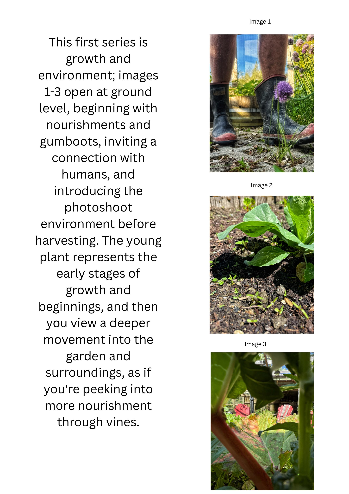
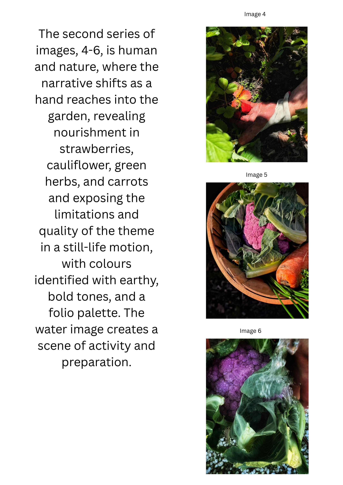
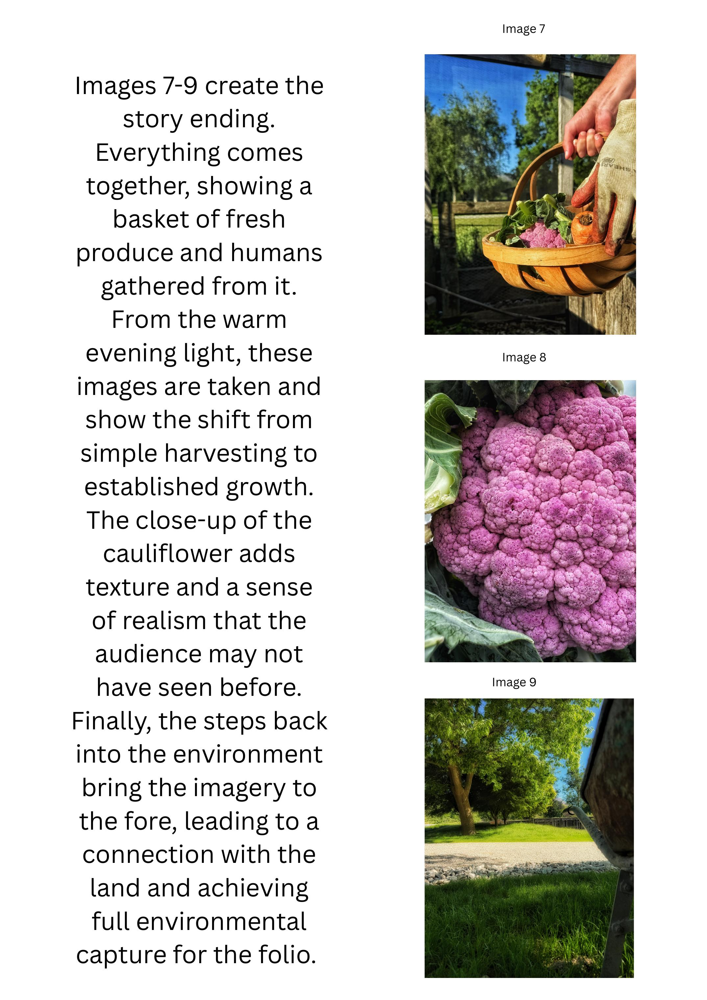
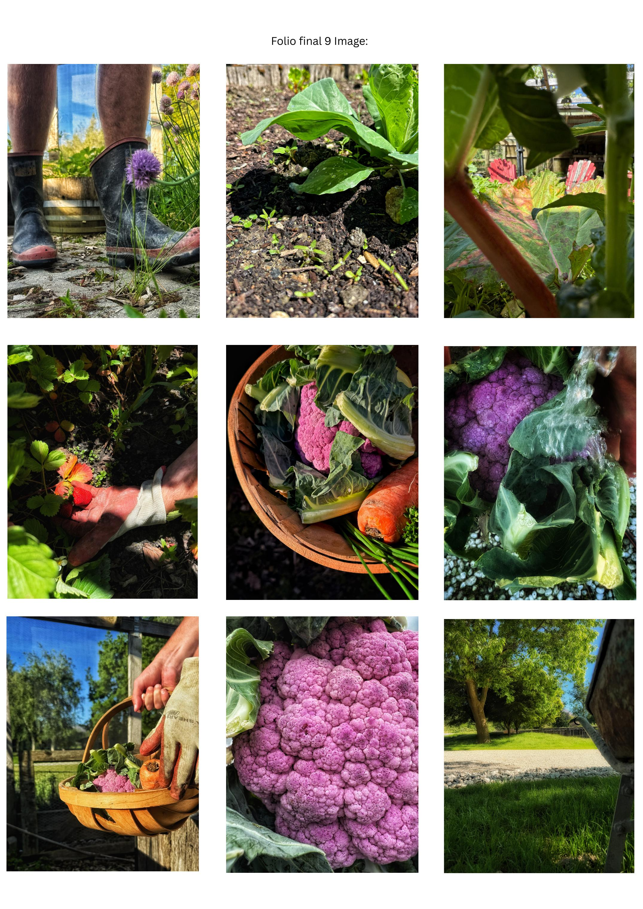

Brief
Use only a smartphone to make a folio about being moved by — and moving through — the natural world.
The constraint sets the project. You can't experience nature sitting still, and you can't experience it through a 60-megapixel pro camera the way you can through the device that's already in your hand. Mobile means able to move or be moved freely. The folio reads whole foods and Queenstown's environment as an active, lived experience: vibrant pigments, depth-of-light limitations, and a working garden as the set.
Approach
The folio splits into three series of three images. Series one opens at ground level — gumboots, soil, a young plant — pulling the viewer into the photoshoot environment before harvesting begins. Series two shifts to human and nature: a hand reaches into the garden, exposing strawberries, cauliflower, herbs and carrots in earthy bold tones, and a water still life builds into a scene of preparation. Series three is the resolution — a basket of fresh produce in warm evening light, hands gathered around it, a close-up of cauliflower bringing a texture the audience hasn't seen before.




You can't experience nature by sitting in the same spot. You must be a part of it, not just watching. — Folio statement
Outcome
A nine-image folio shot entirely on a smartphone, treating nourishment as something active and lived rather than styled-still.
The constraint of the device shaped the look — closer-in, lower, more hand-led, with the depth-of-field limitations of a phone read as part of the visual language rather than a flaw to work around. The work was submitted for PHOMPHS 2025 and now sits in my portfolio as the reference point for any future food or product styling shoot.